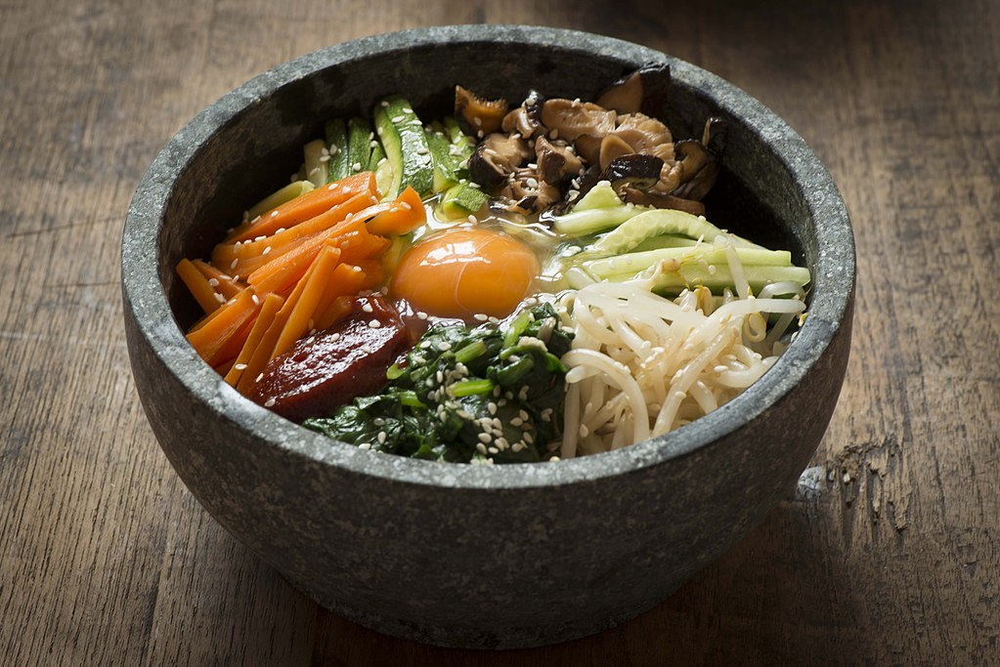

Description
A Korean classic. Delicious, cheap, and nutritious.
Ingredients
- 2 cup of rice of choice
- 1 tbsp of sesame oil
- 2 tspn of olive oil
- 2 tbsp of kochujang sauce
- 2 cup of meat of choice
- 1 egg
- 1/2 cup of sliced carrots
- 1/2 white onion
- 1 avocado
- Sesame seeds
- Seaweed flakes
- Spinach
- Optional: Momofuku Chili Crunch
Steps
- Cook 2 cups of rice.
- Add in 2 tspn of olive oil in pan. Medium heat.
- Chop and grill 1 cup of white onions.
- Grill 2 cups of meat.
- Mix 2 cups of spinach and 1 tbsp of olive oil then grill.
- Place cooked rice in bowl.
- Place grilled onion, spinach, meat, sliced carrots, sliced avocado on top of rice.
- Cook egg to desired preference. Place cooked egg on top of everything.
- Add 1 tbsp of sesame oil. 2 tbsp of kochujang sauce, 2 tbsp of Momofuku Chili Crunch (optional), sesame seeds, seaweed flakes on top of everything.
- Mix thoroughly.
- Enjoy!